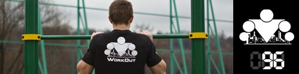

Мы продолжаем двигаться в турбо-режиме! Поэтому после хорошей разминки выполняем 1 раз уже знакомое нам упражнение "всадник" и переходим к новому комплексу, который нужно будет выполнить 5 раз (без отдыха между упражнениями, отдых между кругами по самочувствию)!
1. Медленные отжимания. Выполняем в темпе 5-0-5, то есть вниз опускаемся 5 секунд, и, не задерживаясь в нижней точке, медленно поднимаем себя вверх. Количество повторений — 5-10 раз.
2. Медленные приседания. Идея такая же, как и в отжиманиях. Делаются приседания медленно, примерно в темпе 5-0-5, с абсолютно правильной техникой! Количество повторений — 10-20 раз.
3. Медленные подтягивания. Выполняем в темпе 5-0-5, то есть вверх поднимаемся медленно, задерживаемся 0 секунд в верхней точке и опускаемся вниз 5 секунд. Количество повторений — 2-5 раз.
Ну а завтра будет новый день, и новый комплекс!